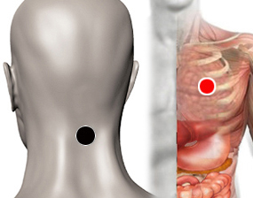

Crueldad, Josué
Par
bulbo raquideo - corazón

Generalidades:
Es un par de tipo emocional y espiritual.
Reacción psicótica: en una crisis psicótica la persona está sumemente agresiva y alterada. El par se coloca hasta regular la frecuencia cardiaca (bradicardia) después se retira.
Un episodio psicótico puede ser provocado por situaciones estresantes o detonantes; o bien, por sustancias químicas como drogas, tóxicos, etcétera. (revisar páncreas - páncreas y los pares del hígado).
También probar en personas que presentan crueldad, sadismo, dominación, agresión.